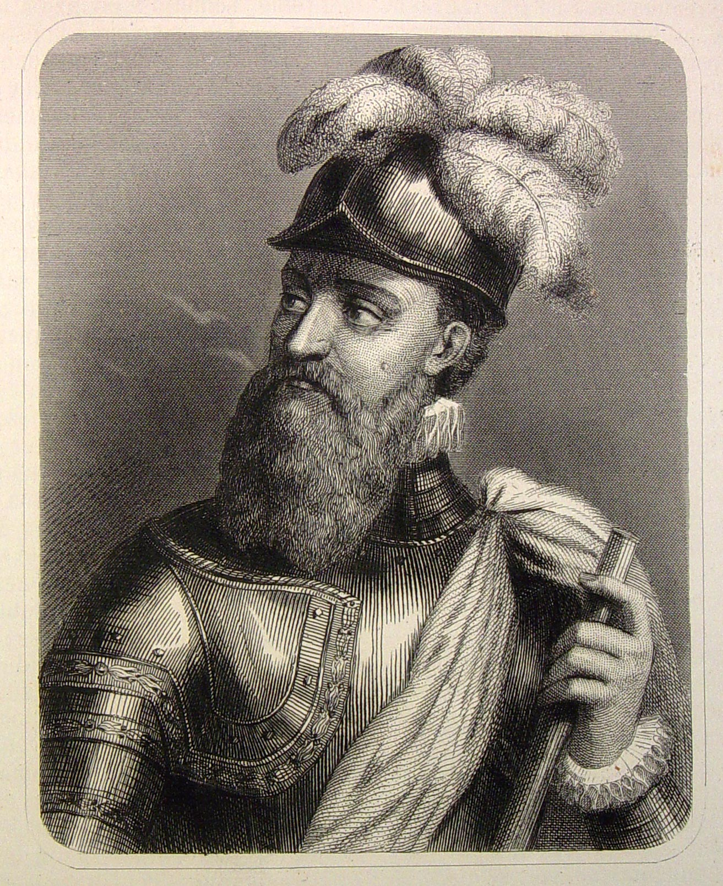
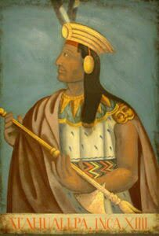

Cronicles of Francisco Pizarro
An Interactive History
Introduction and Preface
Francisco Pizarro is known as the 'conquistador' of Peru.
In 1513 he left Spain to explore the new world on the expedition led by Vasco Núñez de Balboa.
Along with Pizarro, he also employed several people who would go on to write about his exploits and stories.
in 1524 he managed to acquire funding from Diego de Almagro and Hernando de Luque, two important men in
Panama. From Panama, he proposed to conquer "Biru" (Peru). He and others had heard of the trade networks,
riches and possible cities of gold.

Our story begins as Pizarro arrives to the northern Peruvian town of Tumbes. Prior to this
the Incan empire (Tahuantinsuyu) had been struggling with internal conflict and civil war between the
two royal Inca brothers, Huascar and Atahualpa. At this time, the Incan empire was incredibly expansive,
stretching from what is now Colombia all the way to Argentina.

[1] Francisca Pìzarro una ilustre mestiza, María Rostworowski Tovar de Diez Canseco. Lima, IEP.